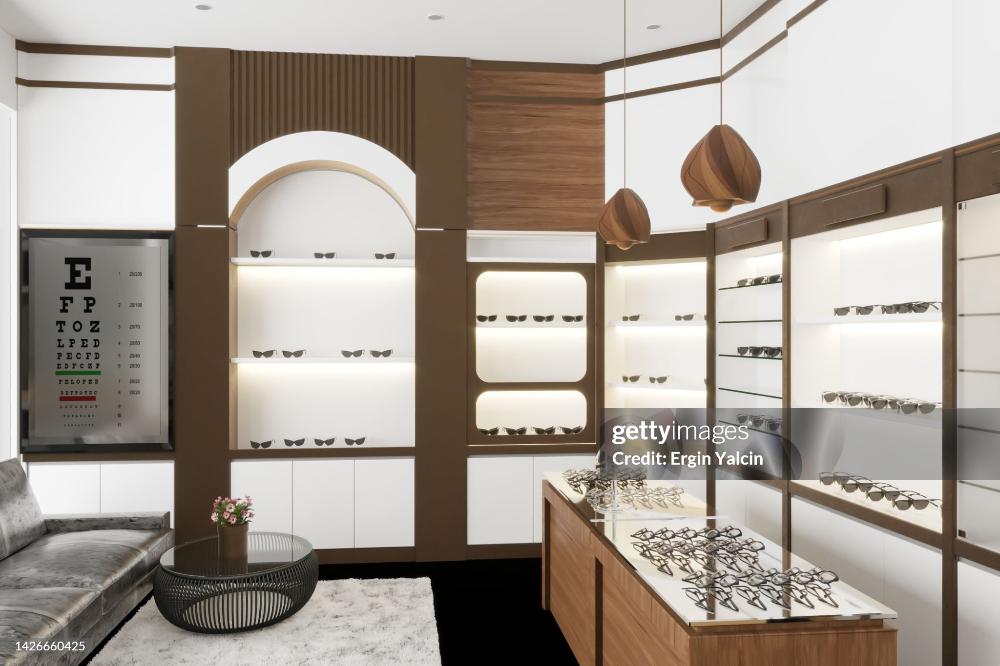
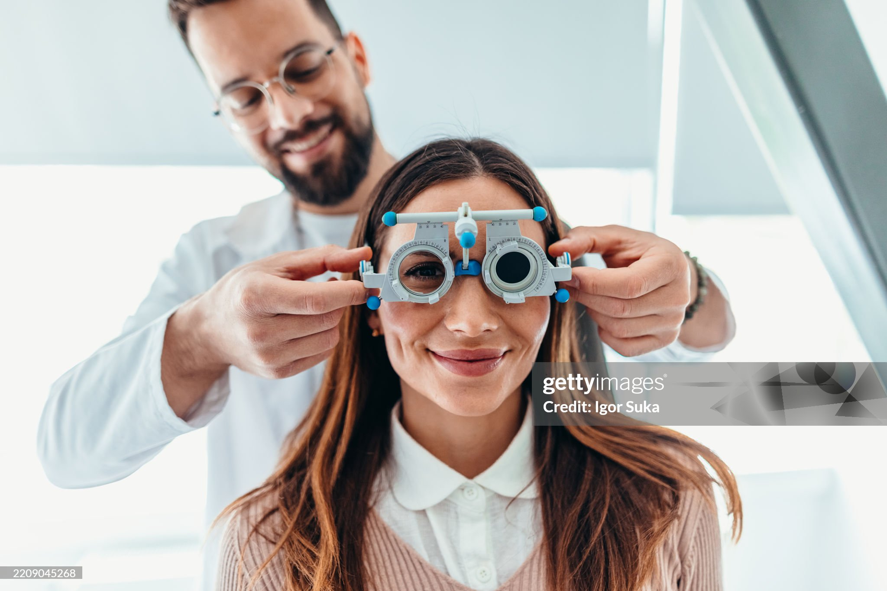
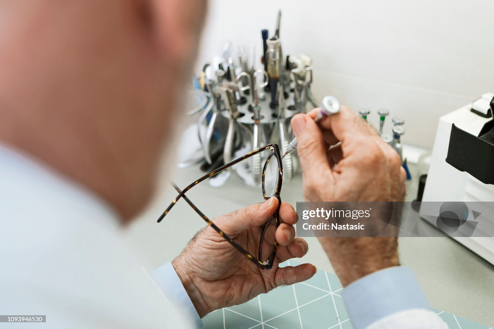
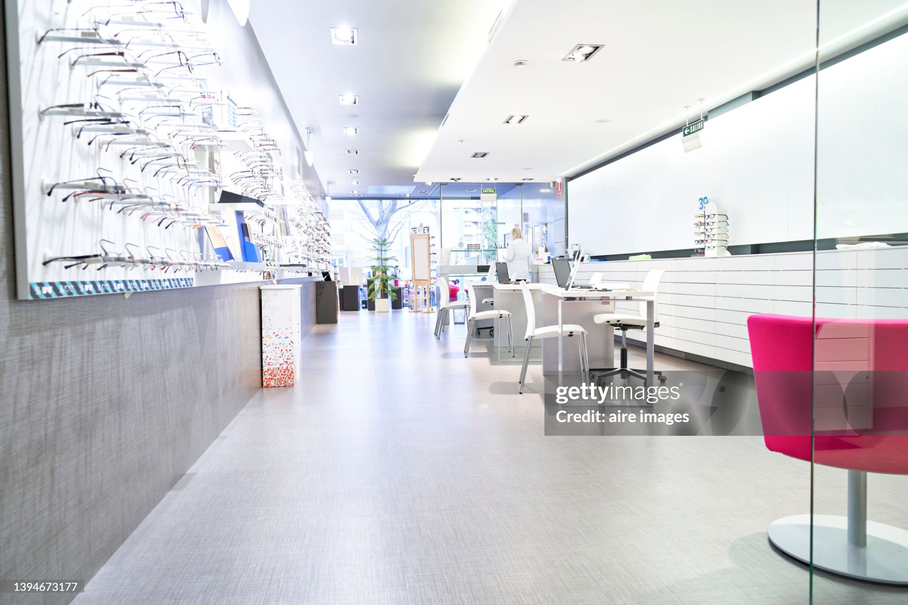
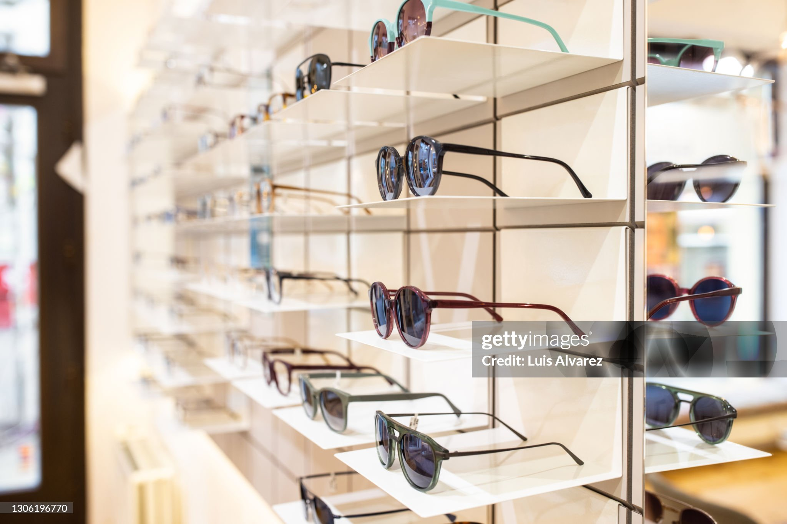

Oristano · Centro
Via Umberto I, 29
Orari
- Lun–Ven09:00–13:00 · 17:00–20:00
- Sabato09:30–13:00
- DomenicaChiuso
Ottica · Optometria · Contattologia dal 1966

Cura della vista a 360°
Dal controllo di routine all'analisi più approfondita: strumenti diagnostici all'avanguardia e professionisti che ti spiegano ogni risultato con chiarezza.
La nostra promessa
Oltre mezzo secolo di dedizione verso la tua visione.

Chi siamo
Tutto è iniziato in un piccolo negozio nel cuore di Oristano. Da allora la nostra missione non è cambiata: garantire a ciascun cliente una visione perfetta e il massimo comfort visivo.
Oggi siamo un team affiatato di ottici, optometristi e contattologi. Ogni anno investiamo in strumenti diagnostici all'avanguardia, ma il nostro metodo resta lo stesso: ascoltarti, spiegarti e seguirti anche dopo l'acquisto.
Apre il primo piccolo negozio a Oristano.
Ci trasferiamo in uno spazio di oltre 200 mq.
Iniziano gli investimenti annuali in tecnologie diagnostiche.
Tre punti vendita e un team di specialisti della visione.
Screening gratuito
Quando hai controllato la vista l'ultima volta?
Per chi guida, per chi lavora al computer, per i bambini che iniziano la scuola. Prenota il check-up gratuito ed evita le attese.
Prenota oraPunti vendita
Scegli quello più comodo per te: in ogni sede trovi lo stesso team e gli stessi servizi.

Oristano · Centro
Orari

Oristano
Orari

Arborea
Orari
Esperienza, innovazione e personalizzazione per una visione perfetta.
Domande frequenti
Non trovi quello che cerchi? Chiamaci o scrivici su WhatsApp, ti rispondiamo noi.
Scrivici su WhatsAppIn genere tra i 30 e i 45 minuti. Comprende l'esame della vista, la misurazione della pressione oculare, il test aberrometrico e la valutazione della visione binoculare. Alla fine ti spieghiamo i risultati con calma.
Sì, lo screening visivo è gratuito e senza impegno. Ti consigliamo di prenotare per evitare attese.
Certo. Offriamo una prova gratuita con adattamento progressivo e controlli periodici, per lenti morbide, multifocali e rigide gas permeabili.
Già in età prescolare è utile un primo controllo. Per i bambini miopi proponiamo anche le lenti ZEISS MyoCare, pensate per gestire la progressione della miopia.
Sì, il nostro servizio di assistenza si occupa di regolazioni, piccole riparazioni e sostituzione di componenti anche su occhiali non acquistati da noi.
Non sempre: i nostri optometristi possono misurare la tua vista. Se emergono situazioni che richiedono un approfondimento medico, ti indirizziamo all'oculista.
Pronto a tornare a vedere bene?
Scegli il negozio più vicino e chiamaci, oppure lascia i tuoi dati e ti richiamiamo noi.